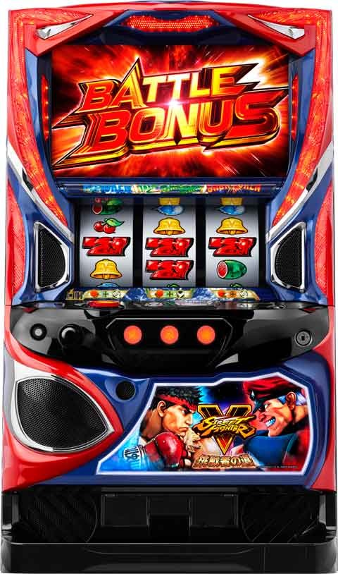

LストリートファイターV

天井非搭載
基本更新しないため下記サイトや動画をご確認ください。
基本情報
- メーカー: エンターライズ
- 機械割: 97.7% 〜 110.6% ※ 完全攻略時
- 導入開始日: 2024年06月03日（月）
- ゲーム性概要: 平均獲得枚数400枚の「バトルボーナス」を搭載して、『スマスロ ストリートファイターV 挑戦者の道』が登場する。 「バトルボーナス」は対戦相手を撃破すれば継続確定となる自力継続型ATで、1セットの獲得枚数は約106枚。小役と目押しで敵を撃破し、ロング継続を掴み取れ！


打ち方
打ち方・小役
通常時の打ち方（小役狙い）
「最初に狙う絵柄」

左リール枠上〜上段に赤7を狙う（黒7でもOK）。
「上段赤7停止時」
成立役…ハズレ／リプレイ／ベル／チャンス目

「チェリー停止時」
成立役…弱チェリー／強チェリー

「スイカ停止時」
成立役…リプレイ／スイカ／チャンス目

中リールにBARを目安にスイカを狙う。右リールはこぼしがないのでフリー打ちでOKだ。
「レア役の停止例」

変則押しはNG

通常時、押し順ナビなし時は左リール第1停止での消化を推奨する。
ボーナス中・スキル役成立時の技術介入

バトルボーナス中のスキル役成立（中押しカットイン発生）時は、目押しの精度によって攻撃の種類＝対戦相手へのダメージ量が変化。中リールに「ベル・赤7・赤7」をビタ押しできればEX必殺技が発生する。ビタ押しのミスがなければ理論上の機械割は設定1でも103%以上（もちろん小役の取りこぼしなどがないことが条件）。 順押しフリー打ちすれば、固定で必殺技が出るので、自信がない時は順押しで消化するのもアリだ。
ビタ押しの成否と攻撃種別（テクニカルの場合）
| ビタ押し | 攻撃 |
|---|---|
| 下記以外 | 通常技以上 |
| 1コマ早い（上中段に赤7停止） | 必殺技 |
| ビタ押し成功（中下段に赤7停止） | EX必殺技 |
| 順押しフリー打ち | 必殺技 |
ボーナス中の打ち方
「基本はナビ通りに消化でOK」

押し順ナビ非発生時は通常時と同様に、左リールに赤7（チェリー）を狙えばOKだ。

中リール・右リールを最初に止めてしまった場合は、左リール枠上〜上段にチェリーを狙って消化しよう。
解析情報通常時
小役関連
ミッション当選率
ミッションのおもな突入契機はレア役。高確以上滞在時はレア役以外からも突入の可能性がある。波動高確中のリプレイもミッションのチャンスだ。 基本的にはミッションを経由してボーナスに当選するが、スイカ成立時はボーナス直撃抽選もおこなわれる。
内部状態別・ミッション当選率
| 役 | 通常滞在時 | 高確滞在時 | 超高確滞在時 |
|---|---|---|---|
| ハズレ・リプレイ | ー | 3.1% | 6.3% |
| スイカ | 0.4% | 3.1% | 6.3% |
| 弱チェリー | 30.1% | 50.0% | 75.0% |
| 強チェリー | 100% | 100% | 100% |
| チャンス目 | 60.2% | 80.1% | 100% |
波動高確中のリプレイ・ミッション当選率
| 役 | 青ランプ | 緑ランプ | 赤ランプ |
|---|---|---|---|
| リプレイ | 約40% | 約67% | 約80% |
［通常時］小役確率
| 役 | 確率 |
|---|---|
| リプレイ | 1/6.3 |
| スイカ | 1/81.9 |
| 弱チェリー | 1/64.0 |
| 強チェリー | 1/1985.9 |
| チャンス目 | 1/364.1 |
| 3枚ベル | 1/20.5 |
※レア役確率合算は1/32.2
［JAC待機中］小役確率
| 役 | 確率 |
|---|---|
| BAR揃い | 1/2.9 |
※BAR揃いでJAC開始 ※記載のない小役確率は通常時と共通
［JAC中］小役確率
| 役 | 確率 |
|---|---|
| リプレイ | ー |
| ハズレ | 1/6.3 |
| 押し順ベル | 1/2.8 |
| 共通13枚 | 1/9.8 |
| スキル役 | 1/2.9 |
※記載のない小役確率は通常時と共通
内部状態関連
内部状態概要
| 項目 | 内容 |
|---|---|
| 種類 | 通常＜高確＜超高確 |
| 昇格契機 | チャンス目・スイカ＜強チェリー （強チェリーは高確以上濃厚） |
| 変化する抽選内容 | レア役でのミッション当選率 |
| 変化する抽選内容 | 高確以上中はレア役以外でもミッション抽選あり |
| 転落契機 | 規定ゲーム数消化で通常へ |
波動高確概要
| 項目 | 内容 |
|---|---|
| 突入契機 | リプレイ成立時の一部 |
| 継続ゲーム数 | 4G |
| 抽選内容 | リプレイでのミッション当選率が大幅アップ |
| その他 | 青＜緑＜赤の順に期待度アップ |
［波動高確］

液晶左下のランプ部分にエフェクトがつくと波動高確。エフェクトの色（青・緑・赤）によってリプレイ成立時のミッション期待度が異なる。 ※画像は赤
内部状態移行率
成立役に応じて、（超）高確への移行を抽選。（超）高確はゲーム数管理となっていて、獲得したゲーム数を消費すると通常時へ転落。高確と超高確ゲーム数両方を獲得した場合、超高確ゲーム数から優先して使用される。
高確移行率
| ゲーム数 | その他 | スイカ | 弱チェリー | 強チェリー | チャンス目 |
|---|---|---|---|---|---|
| 非当選 | 100% | 62.5% | 100% | ー | 62.5% |
| 10G | ー | 25.0% | ー | ー | 31.3% |
| 20G | ー | 11.3% | ー | 75.0% | 4.7% |
| 30G | ー | 1.2% | ー | 21.9% | 1.6% |
| 50G | ー | ー | ー | 2.7% | ー |
| 100G | ー | ー | ー | 0.4% | ー |
超高確移行率
| ゲーム数 | その他 | スイカ | 弱チェリー | 強チェリー | チャンス目 |
|---|---|---|---|---|---|
| 非当選 | 100% | 98.8% | 100% | 99.2% | 100% |
| 10G | ー | 0.4% | ー | ー | ー |
| 20G | ー | 0.4% | ー | ー | ー |
| 30G | ー | 0.4% | ー | ー | ー |
| 50G | ー | ー | ー | 0.4% | ー |
| 100G | ー | ー | ー | 0.4% | ー |
リプレイ成立時・波動高確移行率
| 種別 | 移行率 |
|---|---|
| 青エフェクト | 7.0% |
| 緑エフェクト | 3.5% |
| 赤エフェクト | 1.2% |
| トータル | 11.7% |
モード
ミッションモード
ミッション当選時に、 どのミッションに当選するか を管理するミッションモードが存在。初回のモードは有利区間移行時に決まり、以降は CZ当選のたびに滞在モードを参照して抽選 される。 スイカ・強チェリーでのミッション当選時は上位のモードへ移行するため、ミッションに失敗しても打ち続けることをオススメしたい。
ボーナス後もミッション区分モードは引き継がれる。
［有利区間移行時］ミッションモード振り分け
| モード | 振り分け |
|---|---|
| 通常A | 50.0% |
| 通常B | 37.5% |
| バトル | 11.7% |
| 強バトル | 0.4% |
| 豪鬼バトル | 0.4% |
［ミッション当選時］次回ミッションモード振り分け ハズレ・リプレイ・弱チェリー・チャンス目でミッション当選時
| 滞在モード | 通常Aへ | 通常Bへ | バトルへ | 強 バトルへ | 豪鬼 バトルへ |
|---|---|---|---|---|---|
| 通常A | 46.9% | 50.0% | 2.7% | 0.4% | ー |
| 通常B | 50.0% | 37.5% | 12.1% | 0.4% | ー |
| バトル | 43.8% | 43.8% | 10.9% | 1.2% | 0.4% |
| 強バトル | 43.8% | 43.8% | 10.9% | 1.2% | 0.4% |
| 豪鬼バトル | 40.6% | 40.6% | 6.3% | 6.3% | 6.3% |
スイカでミッション当選時
| 滞在モード | 通常Aへ | 通常Bへ | バトルへ | 強 バトルへ | 豪鬼 バトルへ |
|---|---|---|---|---|---|
| 通常A | ー | ー | 87.5% | 12.5% | ー |
| 通常B | ー | ー | 75.0% | 25.0% | ー |
| バトル | ー | ー | ー | 96.9% | 3.1% |
| 強バトル | ー | ー | ー | 75.0% | 25.0% |
| 豪鬼バトル | ー | ー | ー | ー | 100% |
強チェリーでミッション当選時
| 滞在モード | 通常Aへ | 通常Bへ | バトルへ | 強 バトルへ | 豪鬼 バトルへ |
|---|---|---|---|---|---|
| 通常A | ー | 68.8% | 25.0% | 5.9% | 0.4% |
| 通常B | ー | 50.0% | 43.8% | 5.9% | 0.4% |
| バトル | ー | ー | 50.0% | 48.4% | 1.6% |
| 強バトル | ー | ー | ー | 87.5% | 12.5% |
| 豪鬼バトル | ー | ー | ー | ー | 100% |
ミッション（CZ）
ミッション概要


ボーナス当選のメインとなるCZ。消化中の全役でボーナス抽選がおこなわれ、リプレイやレア役がチャンスとなる。
ミッションの種類
| ミッション | 種類 | 成功期待度 |
|---|---|---|
| 1人ミッション | インドゾウを投げ飛ばせ！ | 19.4% |
| 1人ミッション | 自由の女神を登りきれ！ | 20.2% |
| ペアミッション | 百裂脚を避けきれ！ | 24.9% |
| ペアミッション | ブランカを受け止めろ！ | 28.1% |
| ペアミッション | 腕相撲対決！ | 32.0% |
| ペアミッション | ダルシムを捕まえろ！ | 36.4% |
| 弱バトル | リュウVSガイル | 42.5% |
| 弱バトル | リュウVSダルシム | 46.5% |
| 弱バトル | リュウVSバーディー | 50.6% |
| 中バトル | リュウVSブランカ | 60.3% |
| 中バトル | リュウVS春麗 | 67.8% |
| 中バトル | リュウVSキャミィ | 74.9% |
| 強バトル | リュウVSサガット | 91.0% |
| 豪鬼 バトルミッション | 豪鬼VSシャドルー | 瞬獄乱舞期待度 68.0% |
※豪鬼バトルミッションはバトルボーナス以上濃厚
「豪鬼バトルミッション」

発展した時点でバトルボーナスは濃厚。勝利できれば瞬獄乱舞（Vストック特化ゾーン）へ突入する。
ミッション成功率
| 役 | 1人ミッション | ペアミッション | 弱バトル |
|---|---|---|---|
| その他 | 0.4%～0.8% | 0.4%～6.3% | 2.7%～6.6% |
| リプレイ | 30.1% | 40.2% | 50.0% |
| スイカ | 50.0% | 62.5% | 75.0% |
| 弱チェリー | 50.0% | 62.5% | 75.0% |
| 強チェリー | 100% | 100% | 100% |
| チャンス目 | 100% | 100% | 100% |
| 役 | 中バトル | 強バトル | 豪鬼バトル ミッション |
| その他 | 5.5%～15.2% | 21.1% | 6.3% |
| リプレイ | 66.8% | 80.1% | 54.7% |
| スイカ | 100% | 100% | 100% |
| 弱チェリー | 100% | 100% | 100% |
| 強チェリー | 100% | 100% | 100% |
| チャンス目 | 100% | 100% | 100% |
※成功率にレンジがある箇所はミッションの種類によって抽選値が変化 ※豪鬼バトルは瞬獄乱舞の当選期待度
［小役契機］ミッション種別振り分け ハズレ・リプレイ・弱チェリー・チャンス目でミッション当選時
| 滞在モード | 一人ミッション | ペアミッション | 弱バトル | |||
|---|---|---|---|---|---|---|
| 通常A | 57.0% | 39.8% | 2.7% | |||
| 通常B | 35.9% | 56.3% | 7.4% | |||
| バトル | ー | ー | 83.6% | |||
| 強バトル | ー | ー | ー | |||
| 豪鬼バトル | ー | ー | ー | |||
| 滞在 | 中バトル | 強バトル | バトル 勝利濃厚 | 豪鬼バトル ミッション | ||
| 通常A | 0.4% | ー | ー | ー | ||
| 通常B | 0.4% | ー | ー | ー | ||
| バトル | 15.6% | 0.4% | 0.4% | ー | ||
| 強バトル | ー | 93.8% | 5.9% | 0.4% | ||
| 豪鬼バトル | ー | ー | ー | 100% |
スイカでミッション当選時
| 滞在モード | 一人ミッション | ペアミッション | 弱バトル | |||
|---|---|---|---|---|---|---|
| 通常A | ー | ー | ー | |||
| 通常B | ー | ー | ー | |||
| バトル | ー | ー | ー | |||
| 強バトル | ー | ー | ー | |||
| 豪鬼バトル | ー | ー | ー | |||
| 滞在 | 中バトル | 強バトル | バトル 勝利濃厚 | 豪鬼バトル ミッション | ||
| 通常A | 98.4% | 1.2% | 0.4% | ー | ||
| 通常B | 98.4% | 1.2% | 0.4% | ー | ||
| バトル | ー | 75.0% | 25.0% | ー | ||
| 強バトル | ー | ー | 75.0% | 25.0% | ||
| 豪鬼バトル | ー | ー | ー | 100% |
強チェリーでミッション当選時
| 滞在モード | 一人ミッション | ペアミッション | 弱バトル | |||
|---|---|---|---|---|---|---|
| 通常A | ー | ー | 50.0% | |||
| 通常B | ー | ー | 50.0% | |||
| バトル | ー | ー | ー | |||
| 強バトル | ー | ー | ー | |||
| 豪鬼バトル | ー | ー | ー | |||
| 滞在 | 中バトル | 強バトル | バトル 勝利濃厚 | 豪鬼バトル ミッション | ||
| 通常A | 48.8% | 0.4% | 0.4% | 0.4% | ||
| 通常B | 48.8% | 0.4% | 0.4% | 0.4% | ||
| バトル | 75.0% | 24.2% | 0.4% | 0.4% | ||
| 強バトル | ー | 75.0% | 18.8% | 6.3% | ||
| 豪鬼バトル | ー | ー | ー | 100% |
［樽ボーナス中のチケット契機］ミッション種別振り分け
| ミッション | 振り分け |
|---|---|
| 一人ミッション | ー |
| ペアミッション | 80.1% |
| 弱バトル | 14.8% |
| 中バトル | 3.9% |
| 強バトル | 1.2% |
| バトル勝利濃厚 | ー |
| 豪鬼バトル | ー |
俺より強い奴に会いに行く中のミッション昇格抽選はコチラ
ミッション成功後の昇格抽選
内部的にミッション成功後は、レア役でボーナス種別の昇格を抽選。樽ボーナス→バトルボーナス→バトルボーナス影の順に1段階ずつ昇格する。
ミッション成功後・昇格当選率
| 役 | 当選率 |
|---|---|
| スイカ | 1.6% |
| 弱チェリー | 1.6% |
| 強チェリー | 100% |
| チャンス目 | 6.3% |
瞬獄乱舞
瞬獄乱舞概要

豪鬼バトルミッション勝利時に突入するVストック特化ゾーン。10G間、毎ゲームの成立役に応じてVストック獲得が抽選される。
瞬獄乱舞性能
| 項目 | 内容 |
|---|---|
| 突入契機 | 豪鬼バトルミッション勝利 |
| 継続ゲーム数 | 10G |
| 消化中の抽選 | 全役でミッションVストック獲得抽選 |
| 消化中の抽選 | リプレイ・レア役はストック確定 |
| 消化中の抽選 | レア役は複数ストックに期待 |
Vストック当選率
| 役 | ストック1個 | ストック2個 | ストック3個 |
|---|---|---|---|
| ハズレ・ベル | 12.5% | ー | ー |
| リプレイ | 100% | ー | ー |
| スイカ | 87.5% | 12.1% | 0.4% |
| 弱チェリー | 87.5% | 12.1% | 0.4% |
| 強チェリー | ー | ー | 100% |
| チャンス目 | ー | 75.0% | 25.0% |
影ナル刻（特殊CZ）
影ナル刻概要

ミッション失敗時の一部で突入する特殊CZ。成功すればバトルボーナス影が確定する。
影ナル刻性能
| 項目 | 内容 |
|---|---|
| 突入契機 | ミッション失敗時の一部 |
| 継続ゲーム数 | 10G |
| 消化中の抽選 | 成立役に応じて成功抽選 |
| 消化中の抽選 | 紫7揃いは成功確定 |
| 成功期待度 | 約71% |
| 成功後 | バトルボーナス影確定 |
影ナル刻成功率
| 役 | 成功率 |
|---|---|
| リプレイ | 41.4% |
| スイカ | 100% |
| 弱チェリー | 100% |
| 強チェリー | 100% |
| チャンス目 | 100% |
| 7を狙え | 45.9% |
［狙え演出］

紫7が揃えば成功。カットインの色は青＜緑の順に期待度が高く、赤は成功濃厚だ。
前兆
俺より強い奴に会いに行く

ペアミッション以上濃厚の特殊前兆ステージ。消化中は全役でミッションの昇格が抽選され、液晶上部のロゴで発展するミッションの種類を示唆している。
俺より強い奴に会いに行く性能
| 項目 | 内容 |
|---|---|
| 突入契機 | ミッション当選時orミッション失敗時の一部 |
| 消化中の抽選 | 全役でミッション昇格を抽選（ロゴ色で示唆） |
ロゴ色別の発展先示唆
| ロゴ色 | 発展先 |
|---|---|
| 白（デフォルト） | ペアミッション以上 |
| 青 | ペアミッション以上 |
| 黄 | 弱バトル以上 |
| 緑 | 中バトル以上 |
| 赤 | 強バトル以上 |
| 紫 | 豪鬼バトルミッション |
ミッションランクアップ当選率
| 役 | ペアミッション →弱バトル | 弱バトル →中バトル | 中バトル →強バトル | |
|---|---|---|---|---|
| 下記以外 | 12.5% | 1.6% | 0.4% | |
| リプレイ | 50.0% | 50.0% | 25.0% | |
| スイカ | 100% | 100% | 50.0% | |
| 弱チェリー | 100% | 100% | 50.0% | |
| 強チェリー | 100% | 100% | 100% | |
| チャンス目 | 100% | 100% | 100% | |
| 役 | 強バトル →バトル勝利濃厚 | バトル勝利濃厚 →豪鬼バトルミッション | ||
| 下記以外 | 0.4% | ー | ||
| リプレイ | 6.3% | ー | ||
| スイカ | 25.0% | 3.1% | ||
| 弱チェリー | 25.0% | 3.1% | ||
| 強チェリー | 100% | 25.0% | ||
| チャンス目 | 50.0% | 6.3% |
［ロゴ色変化］

俺より（青）→強い（黄）…のように、文字が表示されるごとに色も変化していく。
俺より強い奴に会いに行くの継続ゲーム数振り分け
| ゲーム数 | 振り分け |
|---|---|
| 13G | 75.0% |
| 15G | 18.8% |
| 17G | 6.3% |
直撃抽選
ボーナス直撃当選率
スイカ成立時にボーナス直撃の可能性あり。当選時はバトルボーナス or バトルボーナス影が確定する。
解析情報ボーナス時
ボーナス共通
ボーナス種別振り分け
| ボーナス 当選契機 | 樽ボーナス | バトル ボーナス | バトル ボーナス影 |
|---|---|---|---|
| 一人ミッション | 46.9% | 53.1% | ー |
| ペアミッション | 46.9% | 53.1% | ー |
| 弱バトル | 46.9% | 53.1% | ー |
| 中バトル | 46.9% | 53.1% | ー |
| 強バトル | 25.0% | 75.0% | ー |
| バトル勝利濃厚 | ー | 100% | ー |
| 豪鬼バトル | ー | 100% | ー |
| ボーナス直撃 | ー | 96.9% | 3.1% |
ボーナス当選契機によってボーナス種別の割合が変化する。
樽ボーナス
樽ボーナス概要

REGに該当するボーナス。約106枚獲得可能で、消化中は成立役に応じて樽（液晶上部に出現する保留のようなもの）の破壊抽選をおこなわう。成立役と破壊した樽の種類で獲得報酬が変化する。
樽ボーナス性能
| 項目 | 内容 |
|---|---|
| 獲得枚数 | 約106枚 |
| 消化中の抽選 | 樽の破壊抽選 |
| 消化中の抽選 | 成立役と樽の種類に応じて報酬を獲得 |
樽の種類と獲得できる報酬
| 樽 | 報酬 | |
|---|---|---|
| ？ | 茶色 | 高確or超高確orミッションチケット |
| ？ | 銀 | 超高確orミッションチケット |
| 高確 | 茶色 | 高確 |
| 高確 | 銀 | 高確 |
| チケット | 茶色 | ミッションチケット |
| チケット | 銀 | ミッションチケット |
| ボーナス | バトルボーナス | |
| 豪鬼 | 豪鬼バトルミッション |
※ミッションチケット10枚でミッション獲得（10枚に満たない分は高確に変換）
［樽の破壊］

樽破壊抽選（樽の種類・アイテム振り分け）
ボーナス開始時に、 樽ボーナスレベル（弱・中・強） を抽選。レベルによって出現する樽の種類が変化する。
樽出現後は3枚ベル・スキル役・レア役成立で破壊確定。樽破壊時の成立役で 破壊レベル（弱・中・強） が抽選されていて、樽の種類と破壊レベルに応じて報酬が抽選される。
破壊レベルで報酬が変化するのは（茶色・銀）・高確（茶色・銀）の4種類の樽のみ。破壊レベル不問で、チケット樽の場合は茶色ならチケット、銀ならチケット［強］を獲得。ボーナス・豪鬼の樽はそれぞれボーナス・豪鬼バトルミッションを獲得できる。
樽の選択割合
| 樽 | 割合 |
|---|---|
| ？（茶色） | 13.2% |
| ？（銀） | 0.4% |
| 高確（茶色） | 48.0% |
| 高確（銀） | 1.8% |
| チケット（茶色） | 36.2% |
| チケット（銀） | 0.39% |
| ボーナス | 0.01% |
| 豪鬼 | 0.01% |
樽ボーナスレベル振り分け
| レベル | 振り分け |
|---|---|
| 弱 | 79.7% |
| 中 | 19.9% |
| 強 | 0.4% |
樽破壊率
| 役 | 破壊率 |
|---|---|
| 下記以外 | 6.3% |
| 3枚ベル | 100% |
| スキル役 | 100% |
| レア役 | 100% |
破壊レベル振り分け
| 役 | 弱 | 中 | 強 |
|---|---|---|---|
| 下記以外 | 100% | ー | ー |
| 3枚ベル | ー | 99.6% | 0.4% |
| スキル役 | 100% | ー | ー |
| スイカ | ー | 99.6% | 0.4% |
| 弱チェリー | ー | 99.6% | 0.4% |
| 強チェリー | ー | ー | 100% |
| チャンス目 | ー | 75.0% | 25.0% |
［破壊レベル：弱］報酬振り分け
| 報酬 | ？ （茶色） | ？ （銀） | 高確 （茶色） | 高確 （銀） |
|---|---|---|---|---|
| 高確ゲーム数 | ー | ー | 100% | ー |
| 高確ゲーム数［強］ | 96.0% | ー | ー | 95.3% |
| 超高確ゲーム数 | 2.0% | ー | ー | 4.7% |
| 超高確ゲーム数［強］ | ー | ー | ー | ー |
| チケット | ー | ー | ー | ー |
| チケット［強］ | 2.0% | ー | ー | ー |
| チケット10枚 | ー | 100% | ー | ー |
※チケット…ミッションチケット
［破壊レベル：中］報酬振り分け
| 報酬 | ？ （茶色） | ？ （銀） | 高確 （茶色） | 高確 （銀） |
|---|---|---|---|---|
| 高確ゲーム数 | ー | ー | 100% | ー |
| 高確ゲーム数［強］ | 33.8% | ー | ー | 77.8% |
| 超高確ゲーム数 | 4.1% | ー | ー | 22.2% |
| 超高確ゲーム数［強］ | ー | ー | ー | ー |
| チケット | ー | ー | ー | ー |
| チケット［強］ | 62.1% | ー | ー | ー |
| チケット10枚 | ー | 100% | ー | ー |
※チケット…ミッションチケット
［破壊レベル：強］報酬振り分け
| 報酬 | ？ （茶色） | ？ （銀） | 高確 （茶色） | 高確 （銀） |
|---|---|---|---|---|
| 高確ゲーム数 | ー | ー | 100% | ー |
| 高確ゲーム数［強］ | 43.8% | ー | ー | 33.3% |
| 超高確ゲーム数 | 28.1% | ー | ー | 50.0% |
| 超高確ゲーム数［強］ | ー | 60.0% | ー | 16.7% |
| チケット | ー | ー | ー | ー |
| チケット［強］ | 28.1% | ー | ー | ー |
| チケット10枚 | ー | 40.0% | ー | ー |
※チケット…ミッションチケット
高確ゲーム数振り分け 高確ゲーム数選択時
| 高確ゲーム数 | 破壊レベル：弱 | 破壊レベル：中 | 破壊レベル：強 |
|---|---|---|---|
| ナシ | ー | ー | ー |
| 1G | 96.9% | ー | ー |
| 2G | 2.7% | ー | ー |
| 3G | 0.4% | ー | ー |
| 5G | ー | 87.5% | ー |
| 7G | ー | 10.9% | ー |
| 10G | ー | 1.2% | ー |
| 20G | ー | 0.4% | ー |
| 30G | ー | ー | 50.0% |
| 50G | ー | ー | 37.5% |
| 100G | ー | ー | 12.5% |
高確ゲーム数［強］選択時
| 高確ゲーム数 | 破壊レベル：弱 | 破壊レベル：中 | 破壊レベル：強 |
|---|---|---|---|
| ナシ | ー | ー | ー |
| 1G | ー | ー | ー |
| 2G | ー | ー | ー |
| 3G | 75.0% | ー | ー |
| 5G | 21.9% | ー | ー |
| 7G | 3.1% | ー | ー |
| 10G | ー | 75.0% | ー |
| 20G | ー | 21.9% | ー |
| 30G | ー | 2.7% | ー |
| 50G | ー | 0.4% | ー |
| 100G | ー | ー | 100% |
超高確ゲーム数振り分け 超高確ゲーム数選択時
| 高確ゲーム数 | 破壊レベル：弱 | 破壊レベル：中 | 破壊レベル：強 |
|---|---|---|---|
| 5G | 75.0% | ー | ー |
| 7G | 18.8% | ー | ー |
| 10G | 6.3% | ー | ー |
| 20G | ー | 75.0% | ー |
| 30G | ー | 25.0% | ー |
| 50G | ー | ー | 75.0% |
| 100G | ー | ー | 25.0% |
超高確ゲーム数［強］選択時
| 高確ゲーム数 | 破壊レベル：弱 | 破壊レベル：中 | 破壊レベル：強 |
|---|---|---|---|
| 5G | ー | ー | ー |
| 7G | ー | ー | ー |
| 10G | 75.0% | ー | ー |
| 20G | 25.0% | ー | ー |
| 30G | ー | 75.0% | ー |
| 50G | ー | 25.0% | ー |
| 100G | ー | ー | 100% |
ミッションチケット枚数振り分け チケット選択時
| チケット枚数 | 破壊レベル：弱 | 破壊レベル：中 | 破壊レベル：強 |
|---|---|---|---|
| 1枚 | 96.9% | ー | ー |
| 2枚 | 2.7% | ー | ー |
| 3枚 | 0.4% | 96.9% | ー |
| 5枚 | ー | 2.7% | ー |
| 7枚 | ー | 0.4% | ー |
| 10枚 | ー | ー | 96.9% |
| 20枚 | ー | ー | 2.7% |
| 30枚 | ー | ー | 0.4% |
チケット［強］選択時
| チケット枚数 | 破壊レベル：弱 | 破壊レベル：中 | 破壊レベル：強 |
|---|---|---|---|
| 1枚 | ー | ー | ー |
| 2枚 | 75.0% | ー | ー |
| 3枚 | 18.8% | ー | ー |
| 5枚 | 5.9% | 75.0% | ー |
| 7枚 | 0.4% | 18.8% | ー |
| 10枚 | ー | 6.3% | ー |
| 20枚 | ー | ー | 50.0% |
| 30枚 | ー | ー | 50.0% |
ミッション当選率

樽ボーナス消化中に獲得したミッションチケットの枚数を参照して、ミッション突入を抽選。非当選時は1枚につき1G、高確ゲーム数に変換される。
ミッションチケット枚数別・ミッション当選率
| 枚数 | 当選率 |
|---|---|
| 1枚 | 0.4% |
| 2枚 | 0.8% |
| 3枚 | 1.2% |
| 4枚 | 1.6% |
| 5枚 | 3.1% |
| 6枚 | 6.3% |
| 7枚 | 12.5% |
| 8枚 | 25.0% |
| 9枚 | 37.5% |
| 10枚 | 100% |
バトルボーナス（影）
バトルボーナス概要

出玉増加のメインとなるボーナス。1セット（JAC1回あたり）の獲得枚数は約106枚で、消化中は敵とのバトルが展開。小役と目押しで 敵のHPを削りきれば勝利となり次セットへの継続濃厚 、削りきれなかった場合は最終ゲームの小役で勝利抽選がおこなわれる。 与ダメージのメインはスキル役成立時で、中リールビタ押しの成否によって発生する攻撃（ダメージ量）が変化する。
バトルボーナス性能
| 項目 | 内容 |
|---|---|
| 獲得枚数 | 約106枚／セット |
| 継続期待度 | 約55～88% |
| 消化中の抽選 | 小役と目押しで敵のHPを削れば次セットへ継続 |
| 消化中の抽選 | 削りきれなかった場合は最終ゲームで継続抽選 |
| 消化中の抽選 | バトルを有利に進めるアイテムや エクストララウンド（継続濃厚）獲得抽選あり |
「対戦相手決定（JAC待機中）」

敵ごとのHPと勝利期待度
| 敵 | HP | 勝利期待度 |
|---|---|---|
| ベガ | 1000 | 約55% |
| バルログ | 950 | 約60% |
| バイソン | 900 | 約70% |
| F.A.N.G | 800 | 約84% |
| 影ナル者 | 800 | 約88% |
BARを揃える（JAC開始の）タイミングで対戦相手を決定。初回のバトルは勝ちやすい相手が選ばれやすい。影ナル者が選択された場合、次セット以降の対戦相手が影ナル者で固定される。
「アシスト抽選」

テクニカルとアシストの違い
| 項目 | 内容 |
|---|---|
| テクニカル | スキル役成立時に ビタ押しが必要 |
| アシスト | スキル役成立時に ビタ押しなしでEX必殺技発生 |
テクニカルとアシスト選択率
| 項目 | 選択率 |
|---|---|
| テクニカル | 56.3% |
| アシスト | 43.8% |
※対戦相手が影ナル者（バトルボーナス影）の場合は必ずアシストを選択
バトル開始時に“テクニカル”と“アシスト”のいずれかを抽選で決定。“アシスト”はスキル役（中リール目押し）成立時に目押し不要で必ずEX必殺技が発生する。
「ファイナルアタック」

枚数消化までに敵のHPを削りきれなかった場合、ファイナルアタックで継続をジャッジ。残りHPと成立役を参照して抽選がおこなわれる。
バトルボーナス影概要

紫7揃いから突入する特殊なボーナス。対戦相手がもっとも勝利期待度の高い影ナル者固定となるうえ、開始時は必ず“アシスト”を選択。ファイターポイントMAXによるアイテムは必ずエクストララウンドを獲得するなど、ロング継続に期待できるするプレミアムボーナスだ。
バトルボーナス影性能
| 項目 | 内容 |
|---|---|
| 突入契機 | 影ナル刻成功、ボーナス初当り時の一部、 ボーナス当選後の昇格抽選に当選時 |
| 恩恵 | バトルの対戦相手がすべて影ナル者 （勝利期待度約88%） |
| 恩恵 | JAC開始時につねにアシストを選択 |
| 恩恵 | 獲得するアイテムがすべてエクストララウンド |
攻撃の種類とスキル役（技術介入要素）
【攻撃の概要】 攻撃には様々なパターンがある。ダメージ抽選のメインとなるのはスキル役で、成立時は中押しカットインが発生。中リール中下段にビタ押しで2連赤7を狙い、中下段に赤7が停止すれば成功となりEX必殺技が発生する。 レア役では必ず必殺技以上が発生、確固不抜やスタンなど、大ダメージを与える契機も存在する。
攻撃抽選契機
| 攻撃 | 契機 |
|---|---|
| 基本攻撃 | スキル役・レア役（レア役は必殺技以上） |
| 確固不抜 | ハズレとベルによるポイントMAX到達後のハズレ |
| スタン | レア役成立時の一部 |
| ガードブレイク | ベル成立時の一部 |
| 真空波動拳 | レア役成立時の一部（強チェリーは発生確定） |
「攻撃の種類」

攻撃の種類と与ダメージ
| 種別 | 攻撃 | 与ダメージ |
|---|---|---|
| 通常技 | パンチ | 20 |
| 通常技 | キック | 30 |
| 通常技 | 投げ | 40 |
| 必殺技 | 波動拳 | 50 |
| 必殺技 | 竜巻旋風脚 | 70 |
| 必殺技 | 昇龍拳 | 90 |
| EX必殺技 | EX波動拳 | 60 |
| EX必殺技 | EX竜巻旋風脚 | 80 |
| EX必殺技 | EX昇龍拳 | 100 |
| 特殊 | 真空波動拳 | 勝利濃厚 |
通常技＜必殺技＜EX必殺技の3種類それぞれに3パターンの攻撃が存在。レア役成立時は必殺技以上が発生する。
「スキル役」
ビタ押しの成否と攻撃種別（テクニカルの場合）
| ビタ押し | 攻撃 |
|---|---|
| 失敗 | 通常技以上 |
| 1コマ早い（上中段に赤7停止） | 必殺技 |
| 成功（中下段に赤7停止） | EX必殺技 |
失敗しても攻撃自体はおこなわれるが、通常技の可能性もあるため、目押しに自信がなければ順押しで消化するのも一つの手ではある（順押し時は必殺技固定）。
「確固不抜」

確固不抜の攻撃回数と与ダメージ
| 攻撃回数 | 攻撃 | 与ダメージ |
|---|---|---|
| 1回 | 一心 | 100 |
| 2回 | 一心→足刀 | 150 |
| 2回 | 一心→波動拳 | 150 |
| 2回 | 一心→竜巻旋風脚 | 170 |
| 2回 | 一心→昇龍拳 | 190 |
| 3回 | 一心→足刀→波動拳 | 200 |
| 3回 | 一心→足刀→竜巻旋風脚 | 220 |
| 3回 | 一心→足刀→昇龍拳 | 240 |
最大3G間、連続で攻撃がおこなわれる。
［ポイント示唆］

液晶ナビ枠に発生する帯電の大きさで獲得ポイントを示唆する。
「スタン」

対戦相手が気絶状態となり、ボタン連打で大ダメージを与えるチャンスとなる。黄スタンと赤スタンの2種類があり、赤スタンの方が期待度は高い。
スタン性能
| 項目 | 内容 |
|---|---|
| 抽選内容 | 5ダメージ×88～98%のループ抽選 |
| 抽選内容 | 弱い対戦相手ほど発生しやすい |
| 黄スタン | デフォルト（平均86.7ダメージ） |
| 赤スタン | 高ループ率濃厚（平均320ダメージ） |
「ガードブレイク」

ガードブレイク単体でのダメージはないが、次ゲームで攻撃を発生させられれば（レア役・スキル役を引く）追撃が発生する。 ガードブレイクの次ゲームで引いたスキル役は“アシスト”扱い なので、目押し不問で成功。バトルの後半ほど発生しやすい特徴がある。与えるダメージは50で固定。
ガードブレイク性能
| 項目 | 内容 |
|---|---|
| 抽選内容 | 次ゲームでスキル役orレア役を引けば追撃 |
| 抽選内容 | 弱い対戦相手ほど発生しやすい |
| 与ダメージ | 50固定 |
「真空波動拳」

真空波動拳発生率
| 役 | 発生率 |
|---|---|
| チャンス目 | 12.5% |
| 強チェリー | 100% |
発生した時点で勝利濃厚。強チェリーは発生確定＝勝利確定となる。
ファイターポイント

液晶右上に表示されているポイントが100ptに到達すると、バトルを有利に進めるためのアイテムを獲得する。
ファイターポイント獲得契機
| No. | 契機 |
|---|---|
| 1 | 対戦相手選択中の成立役による抽選 |
| 2 | バトル勝利時の対戦相手や撃破した技による抽選 |
| 3 | バトル勝利後ムービー中の成立役による抽選 |
※タイミングや成立役に応じて、1契機最大100pt獲得
ファイターポイント100pt到達時の獲得アイテム
| アイテム | 恩恵 |
|---|---|
| 破壊アイテム | 1個につき1人ずつ 強い相手から順に次回の対戦相手を排除 |
| エクストララウンド | 次回のJACが継続濃厚 |
［バトル開始前］ファイターポイント獲得率
| ポイント | その他 | リプレイ | スイカ |
|---|---|---|---|
| 非当選 | 100% | ー | ー |
| 3pt | ー | 93.8% | ー |
| 5pt | ー | 4.7% | ー |
| 7pt | ー | 1.2% | ー |
| 10pt | ー | 0.4% | 87.5% |
| 20pt | ー | ー | 9.4% |
| 30pt | ー | ー | 2.3% |
| 50pt | ー | ー | 0.4% |
| 100pt | ー | ー | 0.4% |
| ポイント | 弱チェリー | 強チェリー | チャンス目 |
| 非当選 | ー | ー | ー |
| 3pt | ー | ー | ー |
| 5pt | ー | ー | ー |
| 7pt | ー | ー | ー |
| 10pt | 87.5% | ー | ー |
| 20pt | 9.4% | ー | ー |
| 30pt | 2.3% | ー | 75.0% |
| 50pt | 0.4% | ー | 18.8% |
| 100pt | 0.4% | 100% | 6.3% |
［バトル勝利時］ファイターポイント獲得量
| 対戦相手 | 獲得ポイント |
|---|---|
| ベガ | 30pt |
| バルログ | 20pt |
| バイソン | 10pt |
| F.A.N.G | 10pt |
| 影ナル者 | 10pt |
［バトルに勝利した技］ファイターポイント獲得量
| 技 | 獲得ポイント |
|---|---|
| 下記以外 | ナシ |
| 波動拳 | 3pt |
| EX波動拳 | 10pt |
| 竜巻旋風脚 | 5pt |
| EX竜巻旋風脚 | 5pt |
| 昇龍拳 | 7pt |
| EX昇龍拳or一心 | 30pt |
| 一心→足刀or一心→波動拳 | 30pt |
| 一心→竜巻旋風脚 | 30pt |
| 一心→昇龍拳 | 30pt |
| 一心→足刀→波動拳 | 50pt |
| 一心→足刀→竜巻旋風脚 | 50pt |
| 一心→足刀→昇龍拳 | 50pt |
| 真空波動拳 | 100pt |
［バトル勝利後ムービー中］ファイターポイント獲得率
| ポイント | その他 | 3枚ベル | スキル役 |
|---|---|---|---|
| 非当選 | 100% | ー | ー |
| 3pt | ー | ー | 93.8% |
| 5pt | ー | ー | 4.7% |
| 7pt | ー | ー | 1.2% |
| 10pt | ー | 87.5% | 0.4% |
| 20pt | ー | 9.4% | ー |
| 30pt | ー | 2.3% | ー |
| 50pt | ー | 0.4% | ー |
| 100pt | ー | 0.4% | ー |
| ポイント | スイカ・弱チェリー | 強チェリー | チャンス目 |
| 非当選 | ー | ー | ー |
| 3pt | ー | ー | ー |
| 5pt | ー | ー | ー |
| 7pt | ー | ー | ー |
| 10pt | 87.5% | ー | ー |
| 20pt | 9.4% | ー | ー |
| 30pt | 2.3% | ー | 75.0% |
| 50pt | 0.4% | ー | 18.8% |
| 100pt | 0.4% | 100% | 6.3% |
エクストララウンド

継続濃厚のJAC。バトルはおこなわれず、消化中の7揃いとレア役でVストックが抽選される。
Vストック獲得率
| 役 | 獲得率 |
|---|---|
| スイカ | 10.2% |
| 弱チェリー | 10.2% |
| 強チェリー | 100% |
| チャンス目 | 50.0% |
| 7を狙え | 16.3% |
残りHP＆成立役別・勝利期待度
| 役 | 残り25～5 | 残り50～30 | 残り75～55 | |||
|---|---|---|---|---|---|---|
| スキル役 | 100% | 100% | 100% | |||
| 3枚ベル | 100% | 100% | 100% | |||
| 弱チェリー | 100% | 100% | 100% | |||
| スイカ | 100% | 100% | 100% | |||
| チャンス目 | 100% | 100% | 100% | |||
| 強チェリー | 100% | 100% | 100% | |||
| 押し順ベル | 75.0% | 62.5% | 50.0% | |||
| 共通13枚 | 75.0% | 62.5% | 50.0% | |||
| 役 | 残り100 ～80 | 残り150 ～105 | 残り200 ～155 | 残り205 以上 | ||
| スキル役 | 100% | 62.5% | 50.0% | 37.5% | ||
| 3枚ベル | 100% | 62.5% | 50.0% | 37.5% | ||
| 弱チェリー | 100% | 62.5% | 50.0% | 37.5% | ||
| スイカ | 100% | 62.5% | 50.0% | 37.5% | ||
| チャンス目 | 100% | 100% | 100% | 100% | ||
| 強チェリー | 100% | 100% | 100% | 100% | ||
| 押し順ベル | 37.5% | 25.0% | 12.5% | 6.3% | ||
| 共通13枚 | 37.5% | 25.0% | 12.5% | 6.3% |
確固不抜抽選
ハズレとベルで蓄積したポイントが20pt到達後、次のハズレで確固不抜が発生。ポイントの余剰分は繰り越される。
ポイント振り分け
| ポイント | ハズレ | ベル1回 | ベル2連 | ベル3連 | ベル4連 以上 |
|---|---|---|---|---|---|
| ＋1pt | 75.0% | 98.4% | 96.9% | 81.3% | 37.5% |
| ＋2pt | 18.8% | 1.2% | 2.7% | 12.5% | 25.0% |
| ＋4pt | 5.1% | 0.4% | 0.4% | 5.9% | 25.0% |
| ＋6pt | 0.4% | ー | ー | 0.4% | 11.7% |
| ＋10pt | 0.4% | ー | ー | ー | 0.4% |
| ＋20pt | 0.4% | ー | ー | ー | 0.4% |
スタン抽選
スタンには3種類のループ率が存在。対戦相手と成立役によってループ率が抽選される。
スタンのループ率
| 種別 | ループ率 |
|---|---|
| スタン弱 | 87.5% |
| スタン中 | 96.1% |
| スタン強 | 98.4% |
スタン当選率 VS ベガ
| 種別 | スイカ | 弱チェリー | チャンス目 |
|---|---|---|---|
| スタン弱 | ー | 25.0% | 75.0% |
| スタン中 | 9.0% | ー | 23.4% |
| スタン強 | 0.4% | ー | 1.6% |
VS バルログ
| 種別 | スイカ | 弱チェリー | チャンス目 |
|---|---|---|---|
| スタン弱 | ー | 37.5% | 62.5% |
| スタン中 | 10.9% | ー | 34.4% |
| スタン強 | 1.6% | ー | 3.1% |
VS バイソン
| 種別 | スイカ | 弱チェリー | チャンス目 |
|---|---|---|---|
| スタン弱 | ー | 50.0% | ー |
| スタン中 | 29.7% | 18.4% | 75.0% |
| スタン強 | 6.3% | 0.4% | 25.0% |
VS F.A.N.G
| 種別 | スイカ | 弱チェリー | チャンス目 |
|---|---|---|---|
| スタン弱 | ー | 37.5% | ー |
| スタン中 | 37.5% | 37.5% | 50.0% |
| スタン強 | 12.5% | 12.5% | 50.0% |
VS 影ナル者
| 種別 | スイカ | 弱チェリー | チャンス目 |
|---|---|---|---|
| スタン弱 | ー | 50.0% | ー |
| スタン中 | 37.5% | 37.5% | ー |
| スタン強 | 12.5% | 12.5% | 100% |
ガードブレイク抽選
JAC（バトル）中のベル成立回数と対戦相手を参照して、ガードブレイクの発生を抽選。ベル回数はバトル終了までリセットされないので、後半へ進むにつれてガードブレイクが発生しやすくなる。
ガードブレイク発生率
| 対戦相手 | ベル 1～3回 | ベル 4～6回 | ベル 7～9回 | ベル 10回以上 |
|---|---|---|---|---|
| ベガ | 1.6% | 3.1% | 6.3% | 12.5% |
| バルログ | 2.0% | 3.9% | 7.8% | 15.6% |
| バイソン | 2.3% | 4.7% | 9.4% | 18.8% |
| F.A.N.G | 6.3% | 12.5% | 25.0% | 50.0% |
| 影ナル者 | 25.0% | 31.3% | 37.5% | 50.0% |
Vストック当選率

バトル開始時の 1.6% でVストックを獲得する（勝利確定）。
確固不抜の攻撃振り分け
HPが少ない（勝ちやすい）相手ほど、強力な技が選択されやすい。
確固不抜発生時の攻撃振り分け
| 技 | VSベガ | VSバルログ | VSバイソン | |
|---|---|---|---|---|
| EX昇龍拳・一心 | 25.0% | 15.6% | 6.3% | |
| 一心→足刀or一心→波動拳 | 18.8% | 21.9% | 12.5% | |
| 一心→竜巻旋風脚 | 15.6% | 18.8% | 9.4% | |
| 一心→昇龍拳 | 12.5% | 15.6% | 6.3% | |
| 一心→足刀→波動拳 | 12.5% | 12.5% | 25.0% | |
| 一心→足刀→竜巻旋風脚 | 9.4% | 9.4% | 21.9% | |
| 一心→足刀→昇龍拳 | 6.3% | 6.3% | 18.8% | |
| 技 | VSF.A.N.G | VS影ナル者 | ||
| EX昇龍拳・一心 | ー | ー | ||
| 一心→足刀or一心→波動拳 | 7.8% | 6.3% | ||
| 一心→竜巻旋風脚 | 7.8% | 6.3% | ||
| 一心→昇龍拳 | 7.8% | 6.3% | ||
| 一心→足刀→波動拳 | 31.3% | 31.3% | ||
| 一心→足刀→竜巻旋風脚 | 25.0% | 25.0% | ||
| 一心→足刀→昇龍拳 | 20.3% | 25.0% |
ボーナス共通
［JAC待機中］小役確率
※BAR揃いでJAC開始 ※記載のない小役確率は通常時と共通
［JAC中］小役確率
| 役 | 確率 |
|---|---|
| リプレイ | ー |
| ハズレ | 1/6.3 |
| 押し順ベル | 1/2.8 |
| 共通13枚 | 1/9.8 |
| スキル役 | 1/2.9 |
| スイカ | 1/81.9 |
| 弱チェリー | 1/64.0 |
| 強チェリー | 1/1985.9 |
| チャンス目 | 1/364.1 |
| 3枚ベル | 1/163.8 |
※レア役確率合算は1/32.2
演出情報
通常時
ステージ解説
| ステージ | 示唆 |
|---|---|
| 道場ステージ | デフォルト |
| 本田湯ステージ | デフォルト |
| 春日野家ステージ | 高確示唆 |
| 朱雀城ステージ | 高確以上or前兆 |
| 朱雀城（夜）ステージ | 超高確or前兆 |
［道場ステージ］

［本田湯ステージ］

［春日野家ステージ］

［朱雀城ステージ］

［朱雀城（夜）ステージ］

会話演出・高確示唆パターン
| ステージ | パターン |
|---|---|
| 道場ステージ （ケンの返答） | 温まってきたぜ！ |
| 道場ステージ （ケンの返答） | いい感じだ！ |
| 道場ステージ （ケンの返答） | いつでもいけるぜ？ |
| 道場ステージ （ケンの返答） | ノッってきたぜ！ |
| 本田湯ステージ （本田の返答） | 温まってきたでごわす！ |
| 本田湯ステージ （本田の返答） | いい感じじゃ！ |
| 本田湯ステージ （本田の返答） | いつでもいけるでごわす！ |
| 本田湯ステージ （本田の返答） | 準備万端じゃ！ |
| 春日野家ステージ （さくらの返答） | 温まってきました！ |
| 春日野家ステージ （さくらの返答） | いい感じです！ |
| 春日野家ステージ （さくらの返答） | 私ワクワクしてます！ |
| 春日野家ステージ （さくらの返答） | 順調です！ |
高確以上濃厚演出
| 演出 | パターン |
|---|---|
| 消灯演出 | 2消灯で共通ベル成立（前兆中除く） |
| いぶき演出 | 第3停止で白告知 |
| 払い出し音 | ベル入賞時の払い出し音がいつもと違う |
［会話演出］

リュウの問いかけに対する返答に注目。
［いぶき演出］

波動高確の期待度示唆

波動高確中のリプレイ成立時は、ランプに表示される文字でミッション当選期待度と当選するミッションの種別を示唆する。
文字別・ミッション当選期待度
| 文字 | ランプのエフェクト色 | トータル 期待度 | ||
|---|---|---|---|---|
| 文字 | 青 | 緑 | 赤 | トータル 期待度 |
| CHANCE（青） | 25.2% | 47.7% | 64.8% | 33.7% |
| CHANCE（緑） | 50.0% | 69.6% | 81.7% | 59.2% |
| CHANCE（赤） | 87.2% | 93.6% | 96.6% | 91.7% |
| STANDBY | 100% | 100% | 100% | 100% |
| BATTLE | 100% | 100% | 100% | 100% |
| 神人 | 100% | 100% | 100% | 100% |
文字ごとの当選するミッション示唆
| 文字 | 示唆 |
|---|---|
| CHANCE（青） | 全ミッション |
| CHANCE（緑） | 全ミッション |
| CHANCE（赤） | 全ミッション |
| STANDBY | 全ミッション |
| BATTLE | バトルミッション以上 |
| 神人 | 豪鬼バトルミッション |
波動高確中・前兆当選濃厚演出
| 演出 | 示唆 |
|---|---|
| 消灯演出 | 前兆濃厚 |
| ステージチェンジ | 前兆濃厚 |
| F.A.N.G演出 | 本前兆濃厚 |
波動高確（ランプ点灯）中に上記演出が発生した場合、波動高確中のリプレイによる前兆中であることを示唆する。
CZ本前兆濃厚演出
| 演出 | パターン |
|---|---|
| レインボー・ミカ &ザンギエフ演出 | ハズレ成立 |
| かりん演出 | ハズレor（強・弱）チェリー成立 |
| ローズ演出 | ハズレorスイカ成立 |
| F.A.N.G演出 | 強チェリーorチャンス目を否定 |
| リュウ演出 | 発生した時点でバトルミッション以上 |
| リプレイ音変化 | リプレイ成立時の音がいつもと違う |
| 遅れ | チェリー→ミッション本前兆 |
| 遅れ | ハズレ→ボーナス本前兆 |
影ナル刻・俺より強いやつに会いに行く当選期待度
| 演出 | 期待度 |
|---|---|
| 液晶上部から赤いオーラ→影ナル刻移行 | 84.7% |
| 液晶にノイズ発生→俺より強いやつに会いに行く移行 | 83.7% |
［レインボー・ミカ&ザンギエフ演出］

［かりん演出］

［ローズ演出］

［F.A.N.G演出］

［リュウ演出］

［液晶上部から赤いオーラ］

［液晶にノイズ発生］

豪鬼バトルミッション当選示唆
各演出に“豪鬼”が出現したり、“滅殺”の文字が表示されると次に当選するミッションが豪鬼バトルミッション濃厚となる。
［豪鬼通過］

［ローズ演出；豪鬼カード］

［滅殺文字］

ステージチェンジのミッションモード示唆
ミッション失敗後に発生するステージチェンジのパターンで、次のミッションの種類を示唆する。ミッションのストックがある場合、ミッション終了後、即前兆がスタート。即前兆の場合は、すでに当選しているミッションの種別をステージチェンジで示唆する。
ステージチェンジ・示唆内容
| No. | パターン | 示唆 |
|---|---|---|
| 1 | 霧のみ | デフォルト |
| 2 | ストリートファイターロゴ | 上位のミッションに期待 |
| 3 | ストートファイターVロゴ | バトルミッション以上 |
| 4 | ストリートファイターV挑戦者の道ロゴ | 強バトル以上 |
| 5 | 豪鬼フェイス | 豪鬼バトルミッション濃厚 |
［ミッションストック なし ］ステージチェンジ選択割合
| No. | 滞在ミッションモード | ||||
|---|---|---|---|---|---|
| No. | 通常A | 通常B | バトル 以上 | 強バトル 以上 | 豪鬼 バトル |
| 1 | 100% | 93.8% | 81.2% | 68.8% | 55.4% |
| 2 | ー | 6.3% | 6.3% | 12.4% | 11.6% |
| 3 | ー | ー | 12.5% | 6.3% | 13.7% |
| 4 | ー | ー | ー | 12.5% | 5.9% |
| 5 | ー | ー | ー | ー | 13.5% |
［ミッションストック あり ］ステージチェンジ選択割合
| No. | ストックしているミッション | |||||
|---|---|---|---|---|---|---|
| No. | 一人ミッション | ペアミッション | 弱バトル | |||
| 1 | 100% | 75.0% | 75.0% | |||
| 2 | ー | 25.0% | 12.5% | |||
| 3 | ー | ー | 12.5% | |||
| 4 | ー | ー | ー | |||
| 5 | ー | ー | ー | |||
| No. | ストックしているミッション | |||||
| No. | 中バトル | 強バトル | バトル 勝利濃厚 | 豪鬼バトル ミッション | ||
| 1 | 66.7% | 66.6% | 66.2% | 68.1% | ||
| 2 | 8.3% | 3.9% | 8.7% | 2.2% | ||
| 3 | 24.9% | 4.3% | 25.1% | 2.9% | ||
| 4 | ー | 25.2% | ー | 2.8% | ||
| 5 | ー | ー | ー | 24.0% |
［霧のみ］

［豪鬼フェイス］

前兆
前兆パターン
| パターン | 前兆内容 |
|---|---|
| 通常ルート | 基本的な前兆ルート |
| 攻防ルート | リュウとステージ対応キャラの攻防あおりが発生 |
| ステチェン フェイクルート | ステージチェンジのあおりのみで終了 |
| ステチェン 朱雀城ルート | 朱雀城ステージへ移行 |
| ステチェン 朱雀城（夜）ルート | 朱雀城（夜）ステージへ移行 |
前兆パターン別の本前兆期待度
| パターン | 期待度 |
|---|---|
| 通常ルート | 42.3% |
| 攻防ルート | 56.8% |
| ステチェンフェイクルート | 66.9% |
| ステチェン朱雀城ルート | 87.8% |
| ステチェン朱雀城（夜）ルート | 100% |
俺より強い奴に会いに行く・演出法則
| 演出 | 法則 |
|---|---|
| ロゴ振動演出 | ● 第1停止・白発光（弱）→第3停止・白発光（強）なら次ゲームでロゴ色が1段階昇格 |
| 意気込み演出 | ● リュウ「答はある この先に！」なら次ゲームでロゴ色が2段階昇格 |
| 波動拳演出 | ● 発生した時点でロゴ色が2段階昇格 |
| 波動拳演出 | ● 発展告知時に発生した場合はロゴ色不問で強バトル以上に発展 |
［答はある この先に！］

［波動拳演出］

CZ
口上予告発生時のミッション成功期待度
| レバーON時 | 第3停止時連打：白 | 第3停止時連打：赤 |
|---|---|---|
| 通常 | 17.8% | 21.1% |
| チャンスパターン | 20.3% | 32.9% |
その他演出法則
| 演出 | 法則 |
|---|---|
| 次回予告 | ● ミッション成功濃厚 ● バトルボーナス期待度83.4% |
| ステージセレクトのドットパターン | ● バトルボーナス以上濃厚 |
ミッションの発展告知はステージセレクトでおこなわれるのが基本パターン。リュウの口上予告→ボタン連打で発展先を告知するパターンなら、バトル以上のミッション発展濃厚。ボタンが赤なら強バトル以上も濃厚となる。
［次回予告］

［ステージセレクト：デフォルト］

［ステージセレクト：ドットパターン］

ミッションゲーム数
| ゲーム数 | 一人ミッション | ペアミッション | 弱バトル |
|---|---|---|---|
| 1G | ー | ー | ー |
| 2G | ー | ー | ー |
| 3G | デフォルト | デフォルト | ー |
| 4G | チャンス | チャンス | デフォルト |
| 5G | 確定 | 確定 | チャンス |
| 6G | ー | ー | 確定 |
| 7G | ー | ー | ー |
| ゲーム数 | 中バトル | 強バトル | 豪鬼バトル ミッション |
| 1G | ー | ー | ー |
| 2G | ー | ー | ー |
| 3G | ー | ー | ー |
| 4G | デフォルト | ー | ー |
| 5G | チャンス | ー | ー |
| 6G | チャンス | デフォルト | デフォルト |
| 7G | 確定 | ー | ー |
※ゲーム数にはミッション告知ゲームを含む
ミッションゲーム数別・勝利期待度
| ゲーム数 | 一人ミッション | |||||
|---|---|---|---|---|---|---|
| ゲーム数 | インド | アメリカ | ||||
| 3G | 16.1% | 16.9% | ||||
| 4G | 50.2% | 51.4% | ||||
| 5G | 100% | 100% | ||||
| 6G | ー | ー | ||||
| ゲーム数 | ペアミッション | |||||
| ゲーム数 | ダルシム | ガイル | 春麗 | ブランカ | ||
| 3G | 20.2% | 23.0% | 26.4% | 30.2% | ||
| 4G | 47.8% | 51.7% | 56.5% | 61.6% | ||
| 5G | 100% | 100% | 100% | 100% | ||
| 6G | ー | ー | ー | ー | ||
| ゲーム数 | 弱バトル | |||||
| ゲーム数 | ダルシム | ガイル | バーディー | |||
| 3G | ー | ー | ー | |||
| 4G | 36.4% | 40.2% | 44.2% | |||
| 5G | 65.8% | 70.2% | 73.3% | |||
| 6G | 100% | 100% | 100% | |||
| ゲーム数 | 中バトル | |||||
| ゲーム数 | ブランカ | 春麗 | キャミィ | |||
| 3G | ー | ー | ー | |||
| 4G | 49.1% | 56.9% | 64.9% | |||
| 5G | 64.5% | 71.9% | 79.0% | |||
| 6G | 78.1% | 83.7% | 88.7% | |||
| ゲーム数 | 強バトル | 豪鬼バトルミッション | ||||
| ゲーム数 | サガット | 豪鬼 | ||||
| 3G | ー | ー | ||||
| 4G | ー | ー | ||||
| 5G | ー | ー | ||||
| 6G | 90.0% | 100% |
リプレイ成立時のミッション成功期待度

予告音発生でリプレイ（レア役）のチャンス。リプレイ成立時の第3停止後に液晶上に出現するエフェクトの色で期待度を示唆している。
［一人ミッション］リプレイ成立時のトータル期待度
| 予告音 | 期待度 |
|---|---|
| ナシ | 36.5% |
| レバーON時に発生 | 70.6% |
| リール回転開始時に発生 | 100% |
［一人ミッション］ リプレイ成立時・エフェクト色別の期待度
| 予告音 | 色 | 期待度 |
|---|---|---|
| ナシ | 青 | 32.5% |
| ナシ | 緑 | 59.4% |
| ナシ | 赤 | 93.1% |
| ナシ | 紫 | 100% |
| レバーON時に発生 | ナシ | 100% |
| レバーON時に発生 | 青 | 59.3% |
| レバーON時に発生 | 緑 | 81.5% |
| レバーON時に発生 | 赤 | 96.9% |
| レバーON時に発生 | 紫 | 100% |
| リール回転開始時に発生 | 色不問 | 100% |
［ペアミッション］リプレイ成立時のトータル期待度
| 予告音 | 期待度 |
|---|---|
| ナシ | 49.3% |
| レバーON時に発生 | 79.3% |
| リール回転開始時に発生 | 100% |
［ペアミッション］ リプレイ成立時・エフェクト色別の期待度
| 予告音 | 色 | 期待度 |
|---|---|---|
| ナシ | 青 | 40.2% |
| ナシ | 緑 | 75.1% |
| ナシ | 赤 | 93.6% |
| ナシ | 紫 | 100% |
| レバーON時に発生 | ナシ | 100% |
| レバーON時に発生 | 青 | 70.8% |
| レバーON時に発生 | 緑 | 86.4% |
| レバーON時に発生 | 赤 | 96.5% |
| レバーON時に発生 | 紫 | 100% |
| リール回転開始時に発生 | 色不問 | 100% |
［弱バトル］リプレイ成立時のトータル期待度
| 予告音 | 期待度 |
|---|---|
| ナシ | 62.3% |
| レバーON時に発生 | 85.0% |
| リール回転開始時に発生 | 100% |
［弱バトル］ リプレイ成立時・エフェクト色別の期待度
| 予告音 | 色 | 期待度 |
|---|---|---|
| ナシ | 青 | 54.4% |
| ナシ | 緑 | 84.1% |
| ナシ | 赤 | 94.3% |
| ナシ | 紫 | 100% |
| レバーON時に発生 | ナシ | 100% |
| レバーON時に発生 | 青 | 77.9% |
| レバーON時に発生 | 緑 | 90.7% |
| レバーON時に発生 | 赤 | 97.2% |
| レバーON時に発生 | 紫 | 100% |
| リール回転開始時に発生 | 色不問 | 100% |
［中バトル］リプレイ成立時のトータル期待度
| 予告音 | 期待度 |
|---|---|
| ナシ | 80.0% |
| レバーON時に発生 | 94.1% |
| リール回転開始時に発生 | 100% |
［中バトル］ リプレイ成立時・エフェクト色別の期待度
| 予告音 | 色 | 期待度 |
|---|---|---|
| ナシ | 青 | 72.8% |
| ナシ | 緑 | 92.5% |
| ナシ | 赤 | 97.5% |
| ナシ | 紫 | 100% |
| レバーON時に発生 | ナシ | 100% |
| レバーON時に発生 | 青 | 90.1% |
| レバーON時に発生 | 緑 | 95.0% |
| レバーON時に発生 | 赤 | 99.2% |
| レバーON時に発生 | 紫 | 100% |
| リール回転開始時に発生 | 色不問 | 100% |
［強バトル］リプレイ成立時のトータル期待
| 予告音 | 期待度 |
|---|---|
| ナシ | 91.7% |
| レバーON時に発生 | 99.2% |
| リール回転開始時に発生 | 100% |
［強バトル］ リプレイ成立時・エフェクト色別の期待度
| 予告音 | 色 | 期待度 |
|---|---|---|
| ナシ | 青 | 88.4% |
| ナシ | 緑 | 98.6% |
| ナシ | 赤 | 99.4% |
| ナシ | 紫 | 100% |
| レバーON時に発生 | ナシ | 100% |
| レバーON時に発生 | 青 | 98.4% |
| レバーON時に発生 | 緑 | 99.7% |
| レバーON時に発生 | 赤 | 100% |
| レバーON時に発生 | 紫 | 100% |
| リール回転開始時に発生 | 色不問 | 100% |
［豪鬼バトルミッション］リプレイ成立時のトータル期待度
| 予告音 | 期待度 |
|---|---|
| ナシ | 67.7% |
| レバーON時に発生 | 97.8% |
| リール回転開始時に発生 | 100% |
［豪鬼バトルミッション］ リプレイ成立時・エフェクト色別の期待度
| 予告音 | 色 | 期待度 |
|---|---|---|
| ナシ | 青 | 64.7% |
| ナシ | 緑 | 73.1% |
| ナシ | 赤 | 95.1% |
| ナシ | 紫 | 100% |
| レバーON時に発生 | ナシ | 100% |
| レバーON時に発生 | 青 | 95.7% |
| レバーON時に発生 | 緑 | 100% |
| レバーON時に発生 | 赤 | 100% |
| レバーON時に発生 | 紫 | 100% |
| リール回転開始時に発生 | 色不問 | 100% （ナシ・赤は発生しない） |
※期待度は一度のミッション中にリプレイを複数回引いた場合を含むトータルの数値
影ナル刻中の演出期待度

リプレイ以上成立時にPUSHボタンが出現、PUSHボタンを押して告知が発生すれば成功となりバトルボーナス影へ突入する。狙え演出が成功した場合もバトルボーナス影濃厚だ。
雷鳴演出・PUSH出現＆成功期待度 リプレイ成立時のトータル期待度
| 雷鳴演出 | PUSH出現期待度 | 成功期待度 |
|---|---|---|
| ナシ | 22.5% | 45.6% |
| アリ | 68.2% | 46.7% |
レア役込みのトータル期待度
| 雷鳴演出 | PUSH出現期待度 | 成功期待度 |
|---|---|---|
| ナシ | 24.0% | 49.9% |
| アリ | 70.0% | 50.9% |
PUSHボタン出現時の成功期待度
| 雷鳴あおり | 雷の色：白 | 雷の色：赤 |
|---|---|---|
| ナシ | 30.4% | 82.9% |
| アリ | 31.9% | 85.7% |
狙え演出期待度
| 色 | 期待度 |
|---|---|
| 青 | 41.4% |
| 緑 | 71.1% |
| 赤 | 100% |
| トータル | 45.9% |
［雷鳴演出］

白と赤の2パターンが存在。赤ならPUSHボタン出現確定かつ、成功期待度もアップする。
［狙え演出］

赤は7揃い濃厚。第1・第2停止時で昇格するパターンも7揃い濃厚だ。
特化ゾーン
レバーON時の演出＆成立役別・Vストック獲得期待度
| 演出 | その他 | リプレイ | レア役 | トータル 期待度 |
|---|---|---|---|---|
| 演出ナシ | 20.2% | 100% | 100% | 25.5% |
| バストアップ | 36.4% | 100% | 100% | 50.5% |
| 顔アップ | 100% | 100% | 100% | 100% |
［演出ナシ］

［バストアップ］

［顔アップ］

ボーナス
ボーナス確定画面・示唆内容
| 画面 | 示唆 |
|---|---|
| デフォルト | 全ボーナスの可能性あり |
| シャドルー | バトルボーナス以上 |
| 影ナル者 | バトルボーナス影 |
［デフォルト］

［シャドルー］

［影ナル者］

樽ボーナス中の演出法則
| 演出 | 法則 | |
|---|---|---|
| リール回転開始時にナビ発生 | 破壊レベル強 | |
| 雷押し順 | 破壊レベル中以上 | |
| キックで樽を破壊 | 破壊レベル中以上 | |
| レバーON時 意気込み | 発生した時点 | リプレイ以上 |
| レバーON時 意気込み | 第1停止パンチ | 破壊レベル強の期待度アップ |
| レバーON時 意気込み | 第1停止キック | 破壊レベル強濃厚 |
！ナビ発生時の小役割合
| 役 | 破壊レベル弱or中 | 破壊レベル強 |
|---|---|---|
| 弱チェリー・スイカ | ー | 100% |
| 強チェリー | ー | 100% |
| チャンス目A | 27.5% | 72.5% |
| チャンス目B | 28.3% | 71.7% |
レバーON時にリュウの意気込みが発生すれば、樽破壊濃厚だ。
ハズレ・ベル時の液晶ナビ枠エフェクト別 獲得ポイント量示唆
| エフェクト | 獲得ポイント |
|---|---|
| ナシ | 0pt以上 |
| 小 | 1pt以上 |
| 中 | 5pt以上 |
| 大 | 10pt以上 |
※トータル20ptに到達すると確固不抜が発生
累計ポイント示唆演出
| 演出 | 示唆 | |
|---|---|---|
| リュウの セリフ | 「やはり強い」 | 5pt以上 |
| リュウの セリフ | 「もう少しだ」 | 15pt以上 |
| 敵の攻撃 | 強パターン | 10pt以上蓄積 |
リュウのセリフ＆敵攻撃の組み合わせでの蓄積ポイント示唆
| パターン | 蓄積ポイント |
|---|---|
| リュウ「やはり強い」＋敵通常攻撃 | 5pt以上 |
| リュウ「もう少しだ」＋敵通常攻撃 | 15Pt以上 |
| リュウ「もう少しだ」＋敵強攻撃 | 19Pt以上 |
演出別・確固不抜発生期待度
| 敵の攻撃 | リュウ：喰らう | リュウ：ガード |
|---|---|---|
| 通常攻撃 | 2.7% | 5.5% |
| 強攻撃 | 11.0% | 63.7% |
［敵強攻撃］

敵の攻撃時に白セリフが表示されると弱攻撃。エフェクト付きが強攻撃だ。
スタン示唆

レア役成立時に、第1〜第3停止にかけて液晶ナビ枠にSTUNの文字あおりが表示。最終的に文字が完成すればスタン発動となる。あおりの色が赤ならスタン発生濃厚かつ、スタンのループ率が高いことを示唆している（あおりは黄がデフォルト）。
あおりパターン別・スタン発生期待度
| パターン | ベガ | バルログ | バイソン | |
|---|---|---|---|---|
| あおりナシ | 12.4% | 16.6% | 34.2% | |
| 第1停止まであおり | 5.1% | 7.5% | 9.5% | |
| 第2停止まであおり | 11.0% | 15.7% | 19.2% | |
| あおり成功 | 100% | 100% | 100% | |
| 赤あおり | 100% | 100% | 100% | |
| パターン | F.A.N.G | 影ナル者 | ||
| あおりナシ | 51.9% | 55.0% | ||
| 第1停止まであおり | 10.1% | 17.7% | ||
| 第2停止まであおり | 19.9% | 37.3% | ||
| あおり成功 | 100% | 100% | ||
| 赤あおり | 100% | 100% |
ガードブレイク示唆
ベル成立時は、各リール停止時の演出パターンでガードブレイクの発生期待度を示唆する。リュウの意気込み＋押し順ナビ発生時はガードブレイク発生濃厚だ。
ガードブレイク発生期待度
| パターン | ベガ | バルログ | バイソン |
|---|---|---|---|
| 通常 | 3.0% | 2.5% | 2.6% |
| チャンス | 55.2% | 56.6% | 56.7% |
| リュウ先制 | 100% | 100% | 100% |
| パターン | F.A.N.G | 影ナル者 | 平均 |
| 通常 | 11.2% | 21.5% | 4.7% |
| チャンス | 83.3% | 90.5% | 64.1% |
| リュウ先制 | 100% | 100% | 100% |
［通常］

攻撃時の集中線が赤いとチャンスパターン。
ファイナルアタックの勝利期待度
演出でチェックするポイントは、レバーON時のぶつかり合いと第1停止時に発生する敵の攻撃の種類。レバーON時はぶつかり合いが激しいほどチャンス、第1停止時は敵の攻撃が弱いほど期待度がアップする。
演出パターン別・勝利期待度
| パターン | レバーON時のぶつかり合い | 第1停止時の敵攻撃 |
|---|---|---|
| 弱 | 7.7% | 90.1% |
| 中 | 45.2% | 37.6% |
| 強 | 98.1% | 10.3% |
演出組み合わせ別・トータル勝利期待度
| レバーON時 | 第1停止時 | ||
|---|---|---|---|
| レバーON時 | 弱 | 中 | 強 |
| 弱 | 72.3% | 25.6% | 6.6% |
| 弱 | 94.6% | 60.6% | 41.6% |
| 強 | 99.7% | 98.1% | 96.7% |
演出組み合わせ＆残りHP別・勝利期待度詳細
| パターン | 残り501以上 | 残り500～251 | 残り250～151 |
|---|---|---|---|
| 弱→弱 | 54.4% | 43.7% | 59.9% |
| 弱→中 | 22.7% | 14.8% | 20.1% |
| 弱→強 | 4.6% | 5.3% | 4.5% |
| 中→弱 | 100% | 79.4% | 89.1% |
| 中→中 | 100% | 42.7% | 57.4% |
| 中→強 | 100% | 29.2% | 44.1% |
| 強→弱 | 100% | 100% | 100% |
| 強→中 | 100% | 100% | 100% |
| 強→強 | 100% | 100% | 100% |
| パターン | 150～101 | 100～51 | 50以下 |
| 弱→弱 | 85.5% | 100% | 100% |
| 弱→中 | 30.6% | 41.1% | 62.6% |
| 弱→強 | 7.3% | 10.8% | 25.4% |
| 中→弱 | 94.2% | 100% | 100% |
| 中→中 | 59.4% | 74.5% | 71.2% |
| 中→強 | 36.3% | 52.5% | 47.0% |
| 強→弱 | 98.4% | 100% | 100% |
| 強→中 | 91.3% | 100% | 100% |
| 強→強 | 85.2% | 100% | 100% |
※パターンの弱・中・強は左から順にレバーON時→第1停止時の演出
勝利時・復活パターン発生割合
| 残りHP | 割合 |
|---|---|
| 501以上 | 50.2% |
| 500～251 | 33.4% |
| 250～151 | 24.8% |
| 150～101 | 18.8% |
| 100～51 | 10.0% |
| 50以下 | 5.0% |
| 平均選択割合 | 19.2% |
敵の残りHPが多い状態で勝利するほど、復活パターンが選択されやすい。
［ぶつかり合い］

二人の顔が近づくのが強パターン。
［敵攻撃］

対戦相手がベガの場合、サイコブラスト（弱）＜ヘッドブレス（中）＜アルティメットサイコクラッシャー（強）の順に、敗北のピンチとなる。
バトル中の演出法則
| 項目 | 法則 |
|---|---|
| ！ナビ | ● レア役 濃厚（スタンor真空波動拳） |
| 白フラッシュナシ | ● 押し順ナビ非発生なら攻撃濃厚 ● テクニカル時ならレア役濃厚 ● アシスト時はリプレイ以上濃厚 |
| ガードブレイク後 | ● レバーON時にナビ発生で攻撃濃厚 （リール回転開始時にナビ発生がデフォルト） |
［！ナビ］

［白フラッシュ］

白フラッシュは敵攻撃時など、ダメージを与えられないゲームで発生することが多い。左リール赤7 or 黒7狙いで消化しよう。
！ナビ発生時の小役割合
| 役 | エクストララウンド 獲得 | エクストララウンド 非獲得 |
|---|---|---|
| 弱チェリー・スイカ | 100% | ー |
| 強チェリー | 49.9% | 50.1% |
| チャンス目 | 21.8% | 78.2% |
※！ナビ発生時のトータルエクストララウンド獲得率は35.8%
！ナビ発生時はチャンス目 or 強チェリー濃厚。弱レア役だった場合はエクストララウンド獲得濃厚となる（ファイターポイントが100ptに到達して、エクストララウンドを告知）。
エクストララウンドの演出法則
レア役成立時は、前兆を経由してVストックの当否を告知。前兆は4G継続でチャンス、5G目まで続けばストック濃厚だ（レア役を連続で引いた場合を除く）。 レア役成立ゲームも注目ポイントで、レバーON時にVのあおりが出現していると、ストック当選期待度がアップする。 ちなみに、レア役成立時に！マークが液晶に出現すればチャンス目 or 強チェリー濃厚。弱レア役の場合はストック濃厚となる。
レア役成立時・ストック期待度
| 役 | レア役成立ゲームで あおりアリ | レア役成立ゲームで あおりナシ |
|---|---|---|
| スイカ | 46.5% | 7.9% |
| 弱チェリー | 47.0% | 7.8% |
| 強チェリー | 100% | 100% |
| チャンス目A | 79.0% | 42.8% |
| チャンス目B | 79.1% | 43.1% |
| 平均期待度 | 54.5% | 12.0% |
あおりパターン別・ストック期待度
| パターン | 期待度 |
|---|---|
| 青 | 5.3% |
| 赤 | 87.1% |
！ナビ発生時の小役割合
| 役 | ストック獲得 | ストック非獲得 |
|---|---|---|
| 弱チェリー・スイカ | 100% | ー |
| 強チェリー | 100% | ー |
| チャンス目A | 80.6% | 19.4% |
| チャンス目B | 80.1% | 19.9% |
7を狙え発生確率＆トータル期待度
| 項目 | 抽選値 |
|---|---|
| 確率 | 1/24.0 |
| 期待度 | 16.3% |
7を狙えパターン別・期待度
| レバーON時 | 第1停止時 | 期待度 |
|---|---|---|
| 青 | 青（変化せず） | 6.7% |
| 青 | 緑 | 100% |
| 青 | 赤 | 100% |
| 青 | 虹 | 100% |
| 緑 | 緑（変化せず） | 40.2% |
| 緑 | 赤 | 100% |
| 緑 | 虹 | 100% |
| 赤 | 赤（変化せず） | 98.0% |
| 赤 | 虹 | 100% |
| 虹 | 虹（変化せず） | 100% |
［Vあおり青］

［Vあおり赤］

［7を狙え］

裏ボタン
裏告知モード

ミッション当選告知後もしくは、ミッション種別告知後に、PUSHボタンを押しながらレバーONすると、裏告知モードへ移行。裏告知モード中はATに当選したゲームの約93%でウーファーによる告知が発生する。ウーファー告知の際にVフラッシュも発生すればバトルボーナス以上濃厚だ（バトルボーナス以上当選時の約50%でVフラッシュが発生）。
ウーファー告知発生タイミング振り分け
| タイミング | 振り分け |
|---|---|
| 非発生 | 7.0% |
| レバーON時 | 66.0% |
| リール回転開始時 | 20.0% |
| 第1停止時 | 1.0% |
| 第2停止時 | 1.0% |
| 第3停止時 | 5.0% |